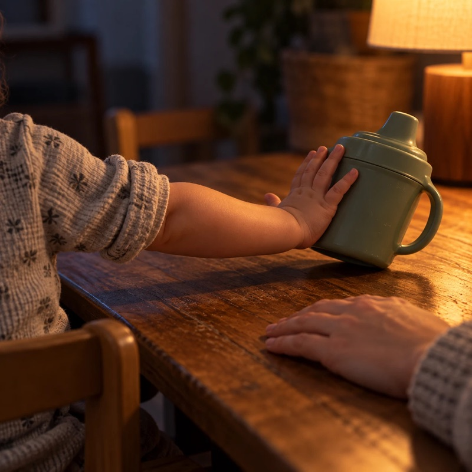
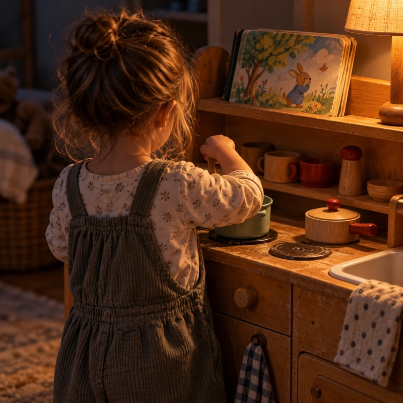
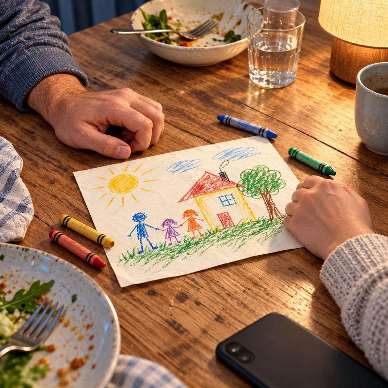
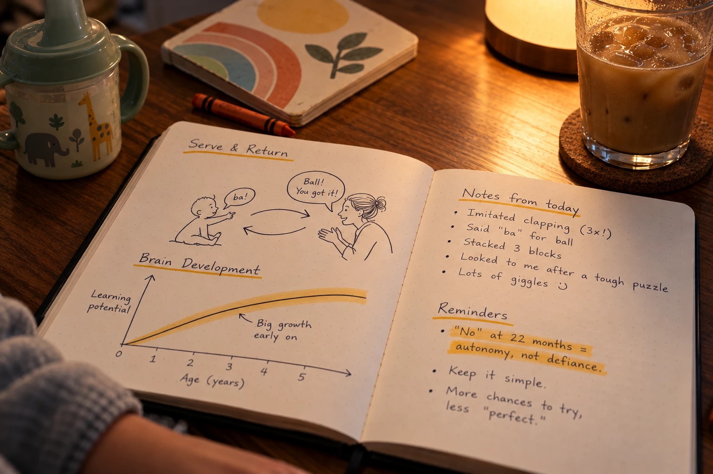

A developmental-science education for parents
Understand your child.Understand yourself.Understand your influence.
Self-paced classes in child development and developmental psychology for parents of children 0 to 5, built from peer-reviewed research. The understanding that used to require a graduate program, finished in evenings instead of semesters.
Taught by Matthew McArthur, Child Development Specialist. M.A. in Developmental Psychology (SDSU), B.A. in Psychology (UCLA), and 100+ families coached in Los Angeles.
The parents who do best are, almost without exception, the ones who understand the science.
Six years studying developmental psychology and two years coaching families in Los Angeles taught me one consistent thing. Parents who know how development works stay calmer, read their children more accurately, and change the things that actually matter. Not because they memorized scripts, but because they can see what is happening in front of them.
That knowledge has lived inside graduate programs and academic journals. It should not require either. Growing Minds Science is the course in child development every parent should have been offered, taught for people with a job, a household, and about forty minutes after bedtime.
Every class teaches you to see three things.
- Your child
- What is being built at this age, what is typical and what is not, and why the hardest behaviors are so often the development itself, showing up on schedule.
- Yourself
- How your own nervous system, history, and stress enter the room, and what regulation actually looks like in an adult, because a child’s calm is borrowed before it is owned.
- Your influence
- Which parts of the environment shape development (conversation, routines, serve and return) and which worries the research lets you set down for good.
Your instructor
Matthew McArthur
Child Development Specialist and parent coach, Los Angeles
- M.A. in Developmental Psychology, San Diego State University
- B.A. in Psychology, UCLA
- Six years studying developmental science; two years coaching it directly with 100+ families
- Teaches an Infant and Toddler Socialization class in Los Angeles
The curriculum, in developmental order.
Four classes, each built around one developmental window. Start with the one your family is in now, or take them in sequence as your child grows. Every class is self-paced and yours for life.
-
Class 1 · Birth to 12 months
Cues, attachment, and the first year
After this class you can explain why responsive care builds security rather than spoiling, what infant sleep actually looks like across the first year, and how language begins long before the first word.
Open now
-

Class 2 · Toddler years
Language, autonomy, and big feelings
After this class you can explain why “no” is a milestone rather than defiance, what a meltdown is neurologically, and how your calm becomes the scaffold their regulation is built on.
Open now
-

Class 3 · Preschool years
Self-regulation, play, and readiness
After this class you can explain why pretend play is serious cognitive work, how executive function develops on a wide normal range, and what kindergarten readiness means in the research rather than in the brochure.
In development
-

Class 4 · Family systems and stress
How the whole family shapes the developing child
After this class you can explain how household stress reaches a child’s nervous system, why your own regulation is a developmental variable, and which protective factors hold up inside real families.
In development
Taught like a seminar. Built for a Tuesday night.
Short video lessons with full transcripts, watched in any order at any hour. The research is shown rather than hidden, and the goal is a mental model you can carry, not a script to recite.
- Self-paced, lifetime access
- Full transcripts
- Sources cited
- Growing Minds AI included
-
Translate the research, don’t replace it
Plain language, with honesty about what the evidence is and is not. No invented certainty, no oversimplified hooks.
-
Mental models over scripts
A clear way to understand what is happening travels to the situations no script anticipated. Scripts don’t.
-
Respect the parent
You are an adult who is already trying hard and already paying attention. The work assumes nuance, not compliance.
-
Calm by default
No urgency manufactured for engagement, no shame. Educational content, and never a substitute for medical advice.
-
Built for ordinary days
Every recommendation has to survive a normal weekday, between transitions, meals, work, and the real capacity of tired adults.

Growing Minds AI · Included with every class
Office hours, any hour.
Ask the question that came up at bedtime. Growing Minds AI answers from a curated library: peer-reviewed developmental research, the milestone data behind our tracker, and the class curriculum itself. Every answer shows where it is grounded, and points you to the lesson that covers it in depth.
Free to try with no account. Educational only; never medical advice.
Free reading and tools, between classes.
Written and built the same way the classes are taught. No account needed, so you can see whether the approach fits your family before you enroll.
Reading
Research explained without buzzwords or parenting shame.
- What “serve and return” actually meansThe ordinary loop that builds the architecture.
- The toddler “no” is not the war you think it isAutonomy, on schedule.
- When your own nervous system is the variableCo-regulation, from the adult side.
- Self-regulation, brieflyWhat it is, when it develops, what helps.
- A short, honest take on screen timeWhat the evidence supports, and what it doesn’t.
Tools
Interactive tools for the moments between lessons.
- Growing Minds AIAsk a parenting question. Every answer shows its sources.
- Number PathA ten-minute counting check-in you run at home.
- Milestone trackerWhat is typical at each age, birth to three.
- Communication SnapshotTurn what you notice about talking into notes for a checkup.
- Claims libraryCommon parenting claims, checked against the research.
Two classes are open now. $49 each, for life.
One payment, no subscription. Enroll and start the first lesson tonight, on any device.
- Every lesson with a full written transcript
- Lifetime access, at your own pace
- Growing Minds AI, grounded in the class material
- The free milestone tracker
-
Class 1
Birth to 12 months
$49
See the class -
Class 2
Toddler years, 1 to 3
$49
See the class
Before you enroll
Can I try the approach before I pay?
Yes. The articles, the free tools, and Growing Minds AI are written and built the same way the classes are taught, with no account needed. If they fit your family, the classes will.
Do I need any background in psychology?
No. The classes assume you are intelligent and busy, not that you have read the literature. Every term is explained the first time it appears.
How long do I have access?
For life. One payment, no subscription, no deadlines. Watch on your phone, tablet, or laptop, in any order.
Can I get a refund?
All sales are final, which is why everything free on this site is written in the same voice as the classes: use it first. If something goes wrong with your access, get in touch and it goes directly to Matthew.
Is this medical or psychological advice?
No. The classes are educational. For concerns about your own child, your pediatrician and your child’s clinicians are the right people to ask, and the classes will help you ask better questions.